12 Modelos para Jenni
Su trabajo se titula “Respuestas espaciales y temporales de Subulo gouazoubira ante la presencia de tres mamíferos introducidos en Uruguay.”
El objetivo del presente estudio fue evaluar el impacto de tres mamíferos introducidos (el jabalí Sus scrofa, el ciervo axis Axis axis y los perros de movimiento libre Canis familiaris) sobre la selección de hábitat y los patrones diarios de actividad del guazubirá (Subulo gouazoubira), en áreas protegidas del este de Uruguay
— Jennifer Gonzalez-Buve>
A tener en cuenta:
- A nivel de cámara y sistema:
- Tasas de registros de:
- Jabalí Sus scrofa
- Ciervo Axis axis
- Perros de movimiento libre Canis familiaris
- Cobertura arbórea
- Tasas de registros de:
- Fase lunar (fracción de luna iluminada)
Estos datos son los que necesito para correr el modelo, en mi tesis de grado no se contempla las tasas de registro de Jabalí ni de Ciervo Axis. Por lo que en primer lugar se obtienen dichos datos.
12.1 Preparación de datos
En primer lugar obtengo la tasa de registro de ciervo axis y jabalí a nivel de cámara y sistema. Para esto cargo los datos de la planilla general y prosigo.
load("data/planilla_general.RData")
data <- datos %>%
select(site, system = station, camera, datetime, sp = species)12.1.1 Tasa de registro
12.1.1.1 A nivel de sistema
tr_data <- data %>%
filter(sp %in% c("Sscr", "Aaxi")) %>%
mutate(system = str_sub(camera, 1, 4)) %>%
select(system, camera, sp)
# En primer lugar se busca el esfuerzo para cada sistema.
system_effort <- read_rds(file = "data_processed/camera_data.RData") %>%
mutate(system = str_sub(camera, 1, 4)) %>%
select(system, camera, effort) %>%
group_by(system) %>%
summarise(effort = sum(effort))
# Esfuerzo de todos los sitemas.
tr_system <- tr_data %>%
select(system, sp) %>%
group_by(system, sp) %>%
summarise(count = n()) %>%
ungroup()
# Luego se contabiliza la cantidad de registros independientes de cada especie en los sistemas.
tr_system <- tr_system %>%
left_join(system_effort, by = join_by(system)) %>%
group_by(system, sp) %>%
summarise(tr_system = count/effort)Y se obtiene:
12.1.1.2 A nivel de camara
# En primer lugar se carga el esfuerzo para cada camara.
camera_effort <- read_rds(file = "data_processed/camera_data.RData") %>%
select(camera, effort)
# Se cuenta la cantidad de regitros independientes en cada cámara para la especies de interés.
tr_camera <- tr_data %>%
select(camera, sp) %>%
group_by(camera, sp) %>%
summarise(count = n())
# Se realiza el calculo de la tasa de registro.
tr_camera <- tr_camera %>%
left_join(camera_effort, by = join_by(camera)) %>%
group_by(camera, sp) %>%
summarise(tr_camera = count/effort) %>%
mutate(system = substr(camera, 1, 4))Se unen los datos en una tabla única para mejor organización, en ella existen los valores de la tasa de registro tanto a nivel de sistema como de camara.
tr_results <- tr_camera %>%
left_join(tr_system, join_by(system, sp)) %>%
select(system, camera, sp, tr_system, tr_camera)Y se obtiene:
Por último se añaden estos valores a la tabla general.
# Obtener todas las cámaras con registro de cualquier especie.
all_cameras <- data %>%
select(camera) %>%
pull()
# Modificar resultados de TR y hacerlos "anchos"
tr <- tr_results %>%
pivot_wider(names_from = sp, values_from = c(tr_system, tr_camera), names_sep = "_")
# Verificar qué camaras son las que faltan en el cálculo de la tr, ya que no poseen registros ni de Btau ni de Cfam
missing_cameras <- setdiff(all_cameras, tr$camera)
# Creamos un tibble con estos datos faltantes
missing_tibble <- tibble::tibble(
system = substr(missing_cameras, 1, 4),
camera = missing_cameras,
tr_system_Aaxi = 0,
tr_camera_Aaxi = 0,
tr_system_Sscr = 0,
tr_camera_Sscr = 0
)
# Y los unimos en un mismo set de datos
tr <- bind_rows(tr, missing_tibble)
# Reemplzamos todos los NA por 0.
tr[is.na(tr)] <- 0
load("data_processed/datos_procesados_v4.RData") # Se carga planilla general
data <- data %>%
mutate(system = substr(camera, 1, 4)) %>%
left_join(tr, join_by(system, camera)) %>%
select(site, system, camera, sp, datetime, everything()) %>%
rename(tr_aaxi_sys = tr_system_Aaxi,
tr_aaxi_cam = tr_camera_Aaxi,
tr_sscr_sys = tr_system_Sscr,
tr_sscr_cam = tr_camera_Sscr)Por último solo me quedo con los datos de S. gouazoubira.
Se tiene un total de 275 registros y en la siguiente gráfica se puede ver la cantidad por cámara.
12.1.2 Estado de los datos
- Tasa de registro de Perro a nivel de cámara y sistema
- Tasa de registro de Jabalí a nivel de cámara y sistema
- Tasa de registro de Ciervo Axis a nivel de cámara y sistema
- Cobertura arbórea a nivel de cámara y sistema
- Iluminación de luna
La tabla con la que se cuenta luce así:
Falta la columna “periodo”, donde se especifica en qué categoría diel cae el registro.

source("functions/convert_hours.R")
data <- data %>%
mutate(solartime_hms = hms(radians_to_hour(solar)),
periodos = case_when(
solartime_hms >= hours(20) | solartime_hms <= hours(4) ~ "nocturno",
solartime_hms > hours(4) & solartime_hms < hours(8) ~ "crepusculo-diurno",
solartime_hms > hours(16) & solartime_hms < hours(20) ~ "crepusculo-nocturno",
solartime_hms >= hours(8) & solartime_hms <= hours(16) ~ "diurno",
))
# Grafica para confirmar los periodos.
ggplot(data, aes(x = solar, y = 1, color = periodos)) + # Usar '1' como eje y solo para dispersión
geom_point() +
scale_x_continuous(breaks = seq(0, 2 * pi, by = pi / 2),
labels = c("0", "π/2", "π", "3π/2", "2π")) + # Etiquetas en radianes
labs(title = "Horarios Solares en Radianes",
x = "Hora Solar (radianes)",
y = "Registro") + # Etiquetas de los ejes
theme_minimal() +
theme(legend.title = element_blank())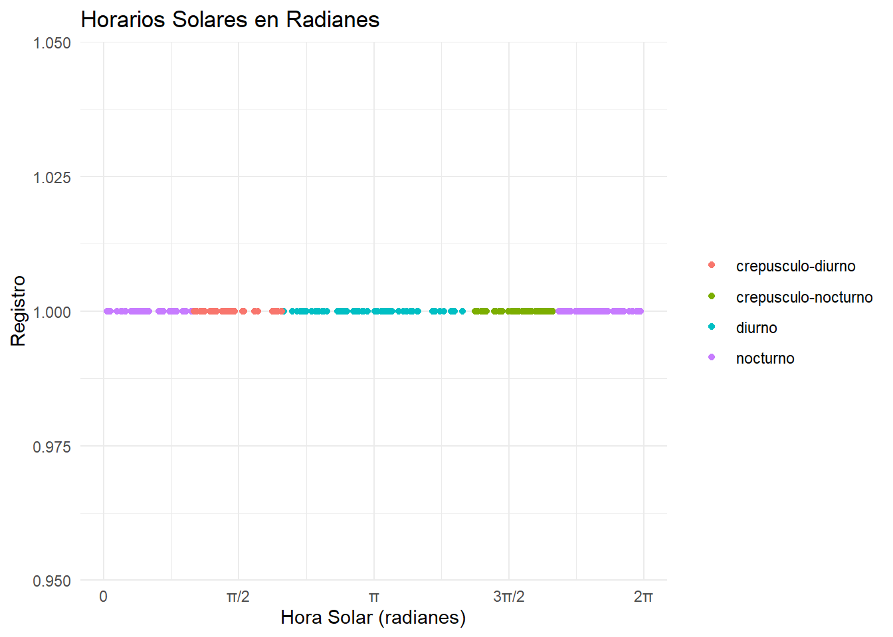
- \(0\): Medianoche
- \(\frac{pi}{2}\): Amanecer
- \(\pi\): Mediodía
- \(\frac{3 \pi}{2}\): Atardecer
Podemos ver también la cantidad de registros dentro de cada periodo:
data %>%
select(periodos) %>%
group_by(periodos) %>%
summarise(n = n()) %>%
arrange(-n) %>%
paged_table(.)Por último hay que formatear las columnas.
12.2 Modelo generalidades
| Atributo | Descripción | Tipo |
|---|---|---|
| system | Sistema | Nominal |
| camera | Nombre de la cámara trampa en que se registró esa observación | Nominal |
| periodo | Categoría diel en que se registra (diurno, nocturno, crepuscular-diurno, crepuscular-nocturno) | Ordinal |
| moon_illumination | Fracción de luna iluminada | Continuo |
| tr_btau_sys | Tasa de registros (tr) de ganado vacuno a nivel de sistema | Continuo |
| tr_btau_cam | Tasa de registros (tr) de ganado vacuno a nivel de cámara | Continuo |
| tr_cfam_sys | Tasa de registros (tr) de perros a nivel de sistema | Continuo |
| tr_cfam_cam | Tasa de registros (tr) de perros a nivel de cámara | Continuo |
| tr_sscr_sys | Tasa de registros (tr) de jabalí a nivel de sistema | Continuo |
| tr_sscr_cam | Tasa de registros (tr) de jabalí a nivel de cámara | Continuo |
| tr_aaxi_sys | Tasa de registros (tr) de ciervo Axis a nivel de sistema | Continuo |
| tr_aaxi_cam | Tasa de registros (tr) de ciervo Axis a nivel de cámara | Continuo |
| wood_sys | Proporción de bosque a nivel de sistema | Continuo |
| wood_cam | Proporción de bosque a nivel de cámara | Continuo |
| n_tech_sys | Cantidad de techos a nivel de sistema | Ordinal |
| n_tech_cam | Cantidad de techos a nivel de cámara | Ordinal |
12.3 Modelo utilizando brms
modelo_aditivo <- brm(
formula = bf(periodos ~ moon_ilumination +
tr_btau_sys + tr_btau_cam +
tr_cfam_sys + tr_cfam_cam +
tr_aaxi_sys + tr_aaxi_cam +
tr_sscr_sys + tr_sscr_cam +
wood_sys + wood_cam +
n_tech_sys + n_tech_cam +
(1 | system/camera)), # Efectos mixtos anidados
data = data,
family = categorical(refcat = "nocturno"), # familia multinomial con el nivel de referencia 'nocturno'
chains = 4, # número de cadenas
iter = 12000, # número de iteraciones
warmup = 2000, # número de iteraciones de calentamiento
control = list(adapt_delta = 0.95), # control para mejorar la convergencia
cores = 6,
threads = 12
)
save(modelo_aditivo, file = "../buckup/modelo_aditivo.RData")## Family: categorical
## Links: mucrepusculodiurno = logit; mucrepusculonocturno = logit; mudiurno = logit
## Formula: periodos ~ moon_ilumination + tr_btau_sys + tr_btau_cam + tr_cfam_sys + tr_cfam_cam + tr_aaxi_sys + tr_aaxi_cam + tr_sscr_sys + tr_sscr_cam + wood_sys + wood_cam + n_tech_sys + n_tech_cam + (1 | system/camera)
## Data: data (Number of observations: 275)
## Draws: 4 chains, each with iter = 12000; warmup = 2000; thin = 1;
## total post-warmup draws = 40000
##
## Multilevel Hyperparameters:
## ~system (Number of levels: 24)
## Estimate Est.Error l-95% CI u-95% CI Rhat Bulk_ESS Tail_ESS
## sd(mucrepusculodiurno_Intercept) 0.55 0.51 0.02 1.85 1.00 14990 18244
## sd(mucrepusculonocturno_Intercept) 1.32 0.96 0.06 3.62 1.00 8931 15871
## sd(mudiurno_Intercept) 1.15 0.90 0.05 3.37 1.00 10525 19488
##
## ~system:camera (Number of levels: 41)
## Estimate Est.Error l-95% CI u-95% CI Rhat Bulk_ESS Tail_ESS
## sd(mucrepusculodiurno_Intercept) 1.00 0.83 0.04 3.11 1.00 5813 8207
## sd(mucrepusculonocturno_Intercept) 1.51 1.01 0.08 3.84 1.00 5567 11227
## sd(mudiurno_Intercept) 1.72 0.99 0.18 4.07 1.00 6419 9818
##
## Regression Coefficients:
## Estimate Est.Error l-95% CI u-95% CI Rhat Bulk_ESS Tail_ESS
## mucrepusculodiurno_Intercept -3.05 1.33 -6.03 -0.80 1.00 23536 18682
## mucrepusculonocturno_Intercept -2.89 1.57 -6.32 -0.02 1.00 24806 22395
## mudiurno_Intercept -3.33 1.78 -7.32 -0.20 1.00 28155 22103
## mucrepusculodiurno_moon_ilumination 0.73 0.62 -0.48 1.97 1.00 53940 28869
## mucrepusculodiurno_tr_btau_sys 5.60 17.34 -31.02 38.12 1.00 17294 13747
## mucrepusculodiurno_tr_btau_cam -13.00 15.75 -45.05 17.47 1.00 17437 14158
## mucrepusculodiurno_tr_cfam_sys -386.75 495.31 -1377.77 600.61 1.00 18730 16181
## mucrepusculodiurno_tr_cfam_cam 107.34 174.41 -247.55 447.89 1.00 18867 16718
## mucrepusculodiurno_tr_aaxi_sys -12.68 11.09 -39.62 4.60 1.00 12682 9468
## mucrepusculodiurno_tr_aaxi_cam 9.05 9.07 -4.85 31.17 1.00 12069 9437
## mucrepusculodiurno_tr_sscr_sys 1.42 3.38 -5.26 8.27 1.00 21303 16866
## mucrepusculodiurno_tr_sscr_cam 1.38 1.27 -0.98 4.09 1.00 28759 17360
## mucrepusculodiurno_wood_sys 6.05 3.84 -0.26 14.84 1.00 14261 10969
## mucrepusculodiurno_wood_cam -2.70 2.44 -8.28 1.44 1.00 15264 11207
## mucrepusculodiurno_n_tech_sys 0.32 0.15 0.07 0.66 1.00 12478 15751
## mucrepusculodiurno_n_tech_cam -0.77 0.58 -2.05 0.26 1.00 13808 19045
## mucrepusculonocturno_moon_ilumination 0.61 0.58 -0.53 1.76 1.00 59992 30964
## mucrepusculonocturno_tr_btau_sys 17.72 12.60 -5.24 44.70 1.00 17953 16493
## mucrepusculonocturno_tr_btau_cam -17.71 12.05 -44.05 3.68 1.00 18722 16083
## mucrepusculonocturno_tr_cfam_sys 55.04 802.84 -1622.16 1619.70 1.00 16576 15432
## mucrepusculonocturno_tr_cfam_cam -110.64 300.60 -728.22 481.31 1.00 16789 16470
## mucrepusculonocturno_tr_aaxi_sys -6.90 13.61 -35.27 19.47 1.00 21525 18312
## mucrepusculonocturno_tr_aaxi_cam -5.23 11.52 -29.62 16.42 1.00 21071 16851
## mucrepusculonocturno_tr_sscr_sys -10.63 12.01 -40.83 5.30 1.00 15519 11459
## mucrepusculonocturno_tr_sscr_cam 6.97 5.58 -0.00 21.16 1.00 14038 10861
## mucrepusculonocturno_wood_sys 1.94 4.46 -6.60 11.36 1.00 14415 14540
## mucrepusculonocturno_wood_cam 2.43 2.70 -2.91 7.92 1.00 17230 18553
## mucrepusculonocturno_n_tech_sys 0.22 0.16 -0.04 0.58 1.00 11312 14541
## mucrepusculonocturno_n_tech_cam -0.24 0.61 -1.57 0.87 1.00 10871 15520
## mudiurno_moon_ilumination 1.07 0.53 0.04 2.11 1.00 58998 31144
## mudiurno_tr_btau_sys 6.23 11.64 -16.68 30.11 1.00 19857 19147
## mudiurno_tr_btau_cam -4.19 9.64 -22.71 15.88 1.00 19909 17943
## mudiurno_tr_cfam_sys 650.85 825.43 -872.21 2433.99 1.00 16710 14497
## mudiurno_tr_cfam_cam -335.43 328.45 -1072.19 241.09 1.00 17091 14524
## mudiurno_tr_aaxi_sys -4.99 13.17 -32.43 20.40 1.00 16166 14981
## mudiurno_tr_aaxi_cam 6.65 10.27 -10.90 29.68 1.00 16909 13794
## mudiurno_tr_sscr_sys -1.64 4.33 -11.45 6.09 1.00 18784 15258
## mudiurno_tr_sscr_cam 0.43 1.55 -2.50 3.80 1.00 24738 17632
## mudiurno_wood_sys -0.01 4.53 -9.01 9.01 1.00 17621 15629
## mudiurno_wood_cam 4.45 3.09 -0.90 11.36 1.00 14402 13369
## mudiurno_n_tech_sys -0.09 0.29 -0.79 0.37 1.00 22429 16444
## mudiurno_n_tech_cam -13.71 17.59 -58.32 -0.36 1.00 11160 6867
##
## Draws were sampled using sampling(NUTS). For each parameter, Bulk_ESS
## and Tail_ESS are effective sample size measures, and Rhat is the potential
## scale reduction factor on split chains (at convergence, Rhat = 1).resultados1 <- summary(modelo_aditivo)[["fixed"]]
resultados1[!(resultados1$`l-95% CI` < 0 & resultados1$`u-95% CI` > 0), ]## Estimate Est.Error l-95% CI u-95% CI Rhat Bulk_ESS Tail_ESS
## mucrepusculodiurno_Intercept -3.0514705 1.3328889 -6.02843144 -0.80244939 1.0000746 23536.34 18681.760
## mucrepusculonocturno_Intercept -2.8929670 1.5733483 -6.31830113 -0.02205965 1.0001366 24806.46 22395.409
## mudiurno_Intercept -3.3330752 1.7849425 -7.31839943 -0.20057473 1.0000439 28155.15 22103.206
## mucrepusculodiurno_n_tech_sys 0.3247463 0.1499956 0.06790488 0.65777237 1.0002278 12477.54 15751.215
## mudiurno_moon_ilumination 1.0656263 0.5269536 0.03533090 2.10883192 0.9999886 58998.00 31144.305
## mudiurno_n_tech_cam -13.7147532 17.5922166 -58.31620596 -0.35821901 1.0002507 11159.59 6866.516Intercepto Crepuscular Diurno: La actividad de Subulo guazubira durante el crepúsculo diurno es significativamente menor en comparación con la nocturnidad. El estimado es -3.05, lo que indica que la probabilidad de actividad en este periodo es menor que durante la noche.
Intercepto Crepuscular Nocturno: El estimado -2.89 sugiere que hay menos actividad en comparación con la noche, pero la diferencia es menos marcada que en el caso del crepúsculo diurno.
Intercepto Diurno: Con un estimado -3.33 indica que Subulo guazubira tiene significativamente menos actividad diurna en relación con la noche.
Número de Techos para el Crepúsculo Diurno: El estimado positivo (0.32) indica que la presencia de más techos en el sistema está asociada con un aumento de la actividad durante el crepúsculo diurno en relación con la noche.
Iluminación de la Luna para el Periodo Diurno: El estimado positivo (1.06) sugiere que, en días con mayor iluminación lunar, Subulo guazubira tiende a mostrar más actividad diurna que nocturna.
Número de Techos para el Periodo Diurno: Un mayor número de techos parece reducir significativamente la actividad diurna en comparación con la nocturnidad, con un estimado muy negativo (-13.71).
marginal_plots <- plot(conditional_effects(modelo_aditivo, categorical=TRUE))
#save(marginal_plots, file="buckup/marginal_plots_aditivo.RData")## $`moon_ilumination:cats__`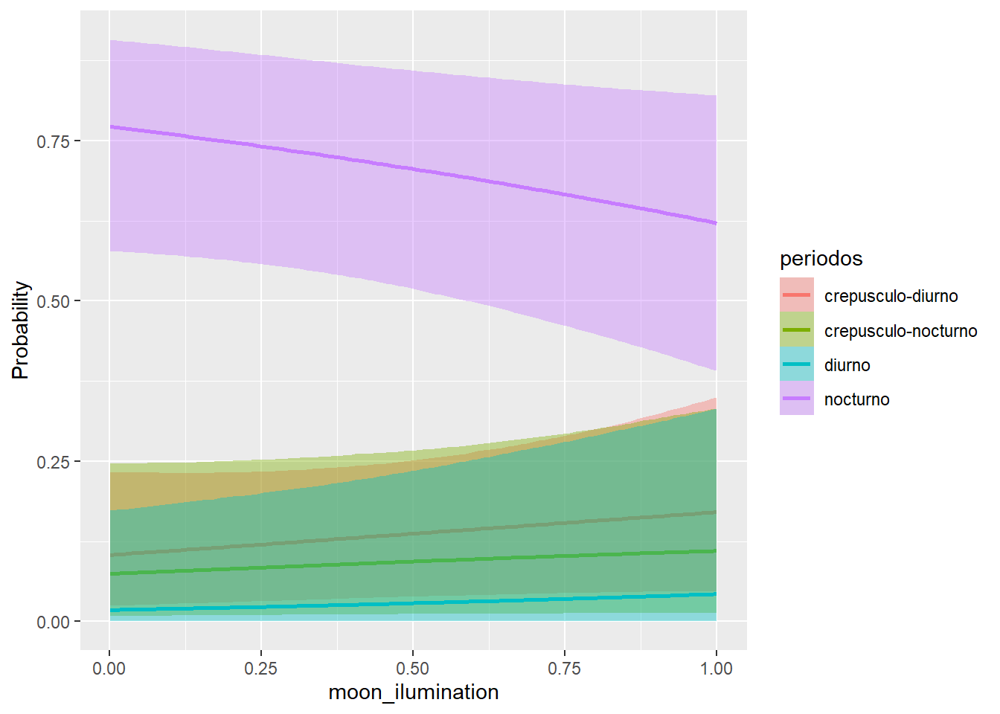
##
## $`tr_btau_sys:cats__`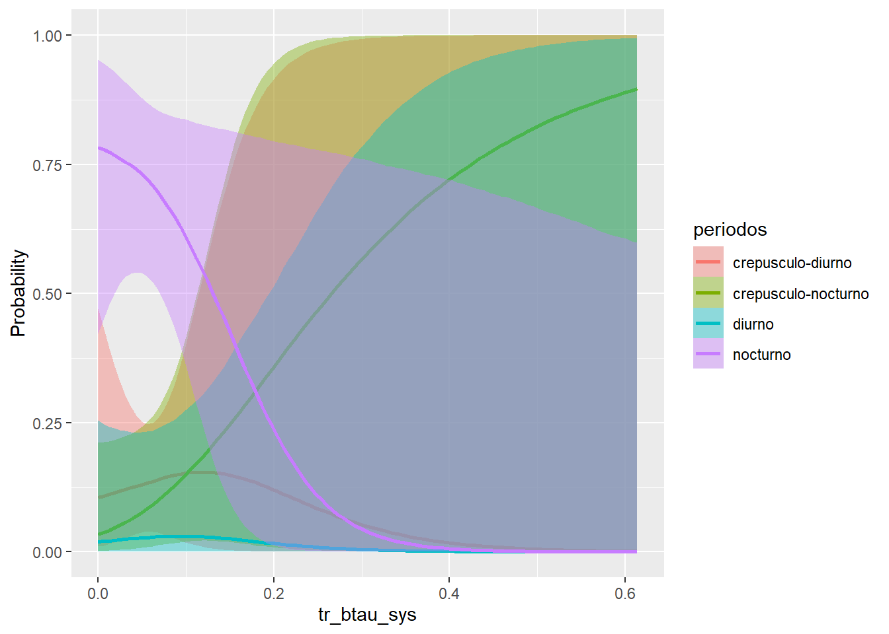
##
## $`tr_btau_cam:cats__`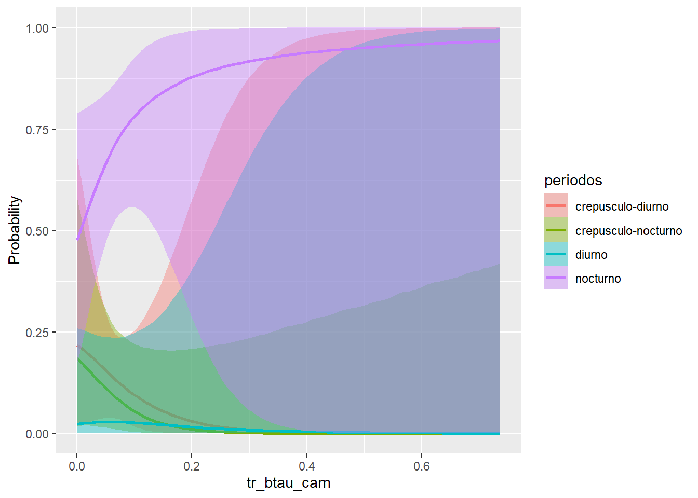
##
## $`tr_cfam_sys:cats__`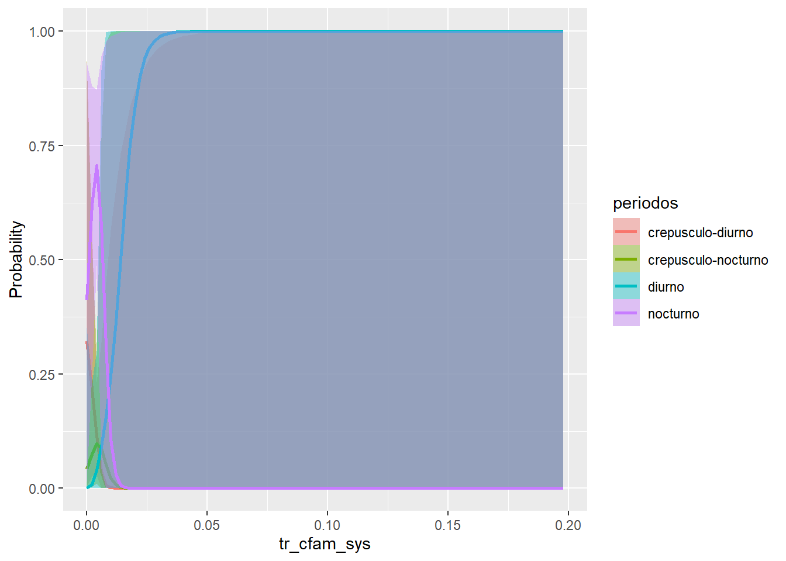
##
## $`tr_cfam_cam:cats__`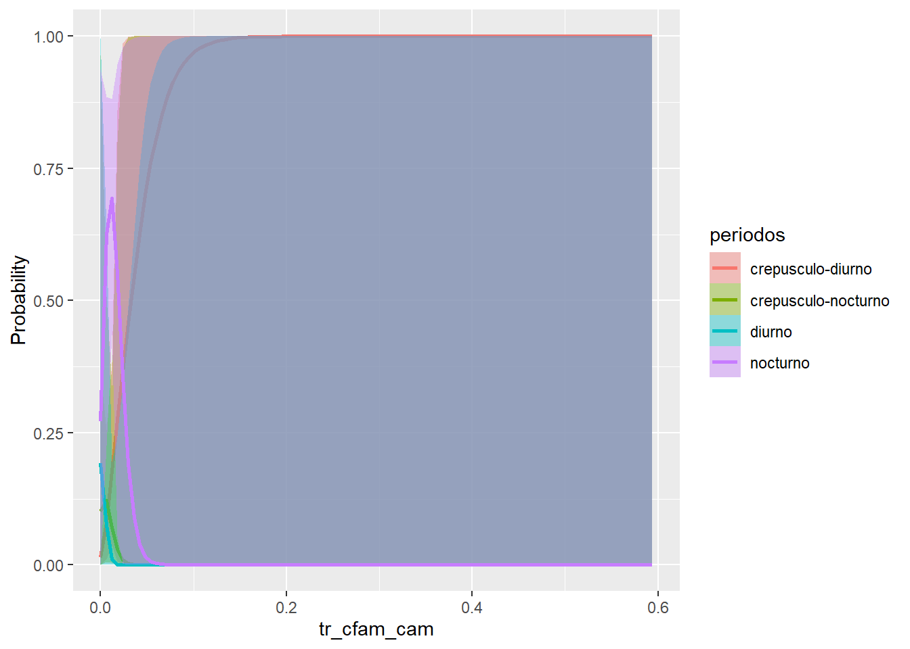
##
## $`tr_aaxi_sys:cats__`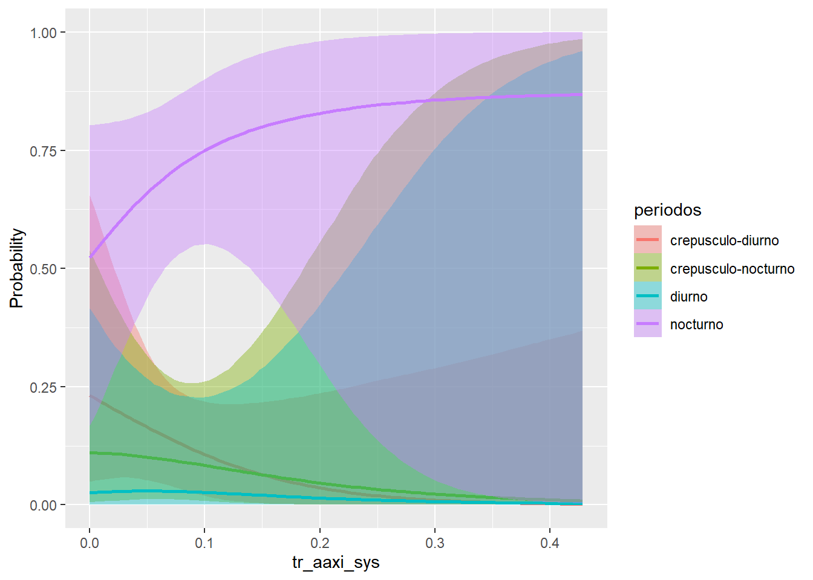
##
## $`tr_aaxi_cam:cats__`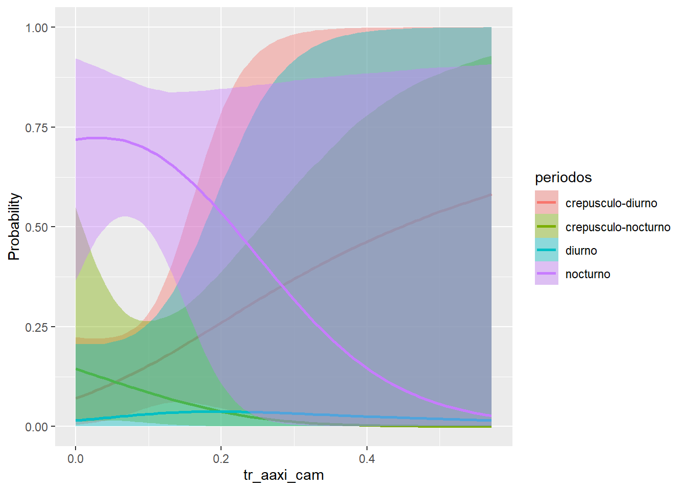
##
## $`tr_sscr_sys:cats__`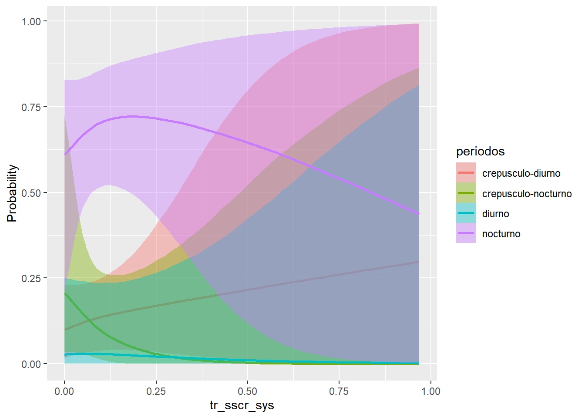
##
## $`tr_sscr_cam:cats__`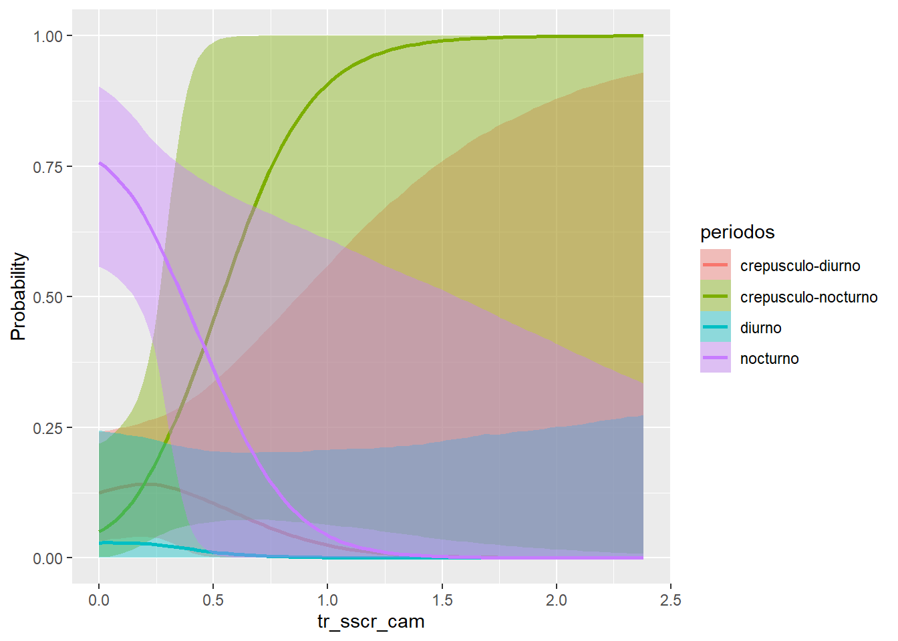
##
## $`wood_sys:cats__`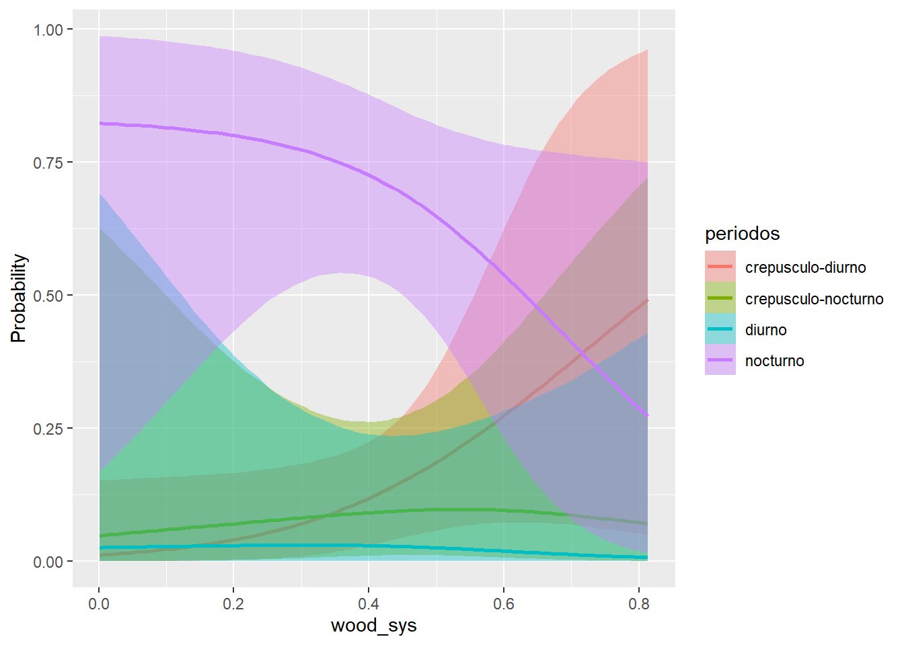
##
## $`wood_cam:cats__`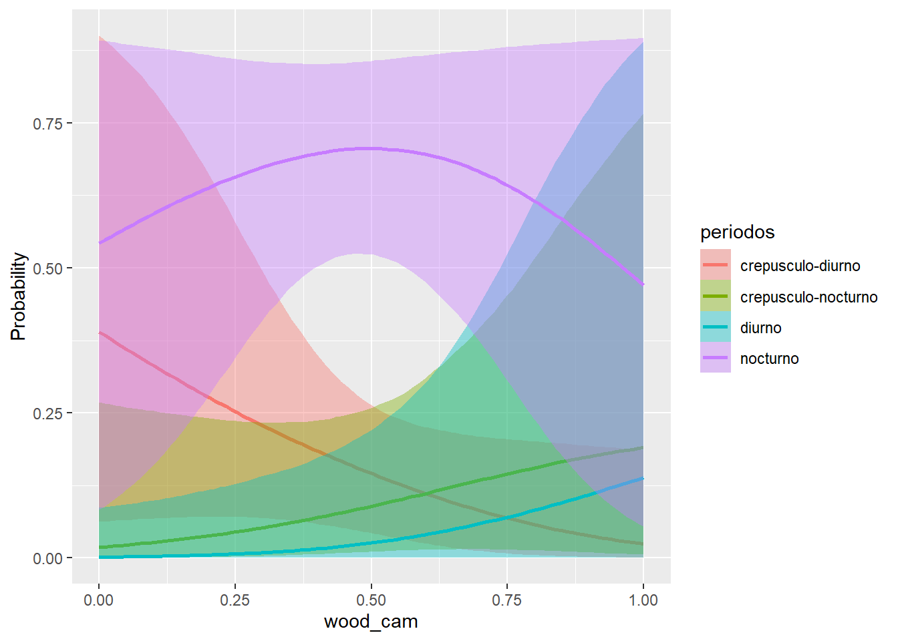
##
## $`n_tech_sys:cats__`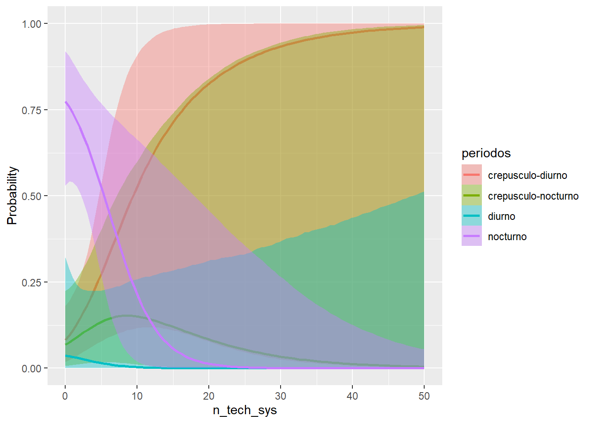
##
## $`n_tech_cam:cats__`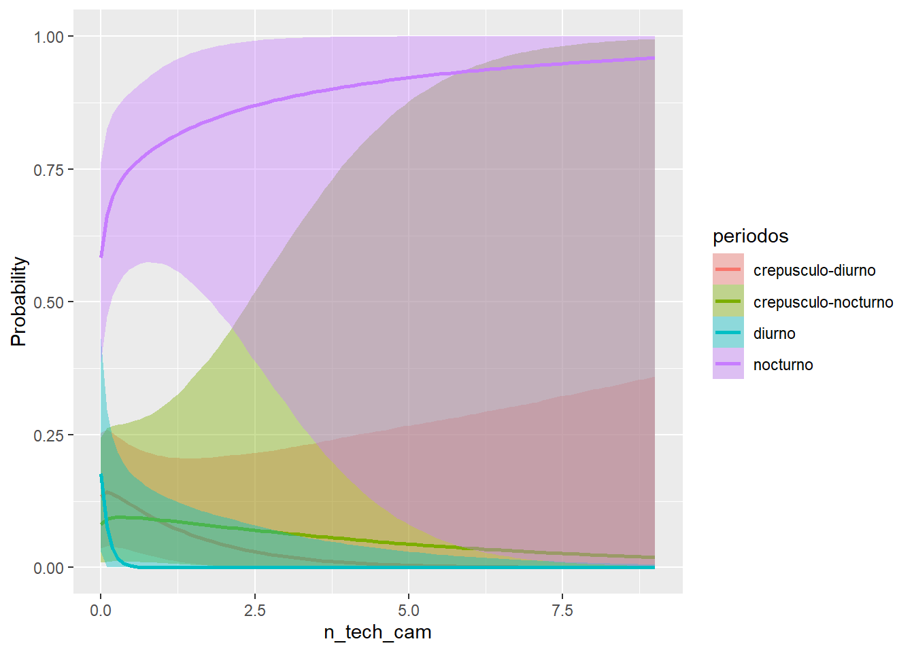
12.4 Modelo con interacciones
Una interacción que podría ser interesante es el complemento de wood y la iluminación de la luna.
data <- data %>%
mutate("wood_sys_complemento" = 1 - wood_sys,
"wood_cam_complemento" = 1 - wood_cam)start_time <- Sys.time()
modelo_interacciones <- brm(
formula = bf(periodos ~
moon_ilumination*wood_sys_complemento + # luz de luna - no wood
moon_ilumination*wood_cam_complemento +
moon_ilumination*tr_aaxi_sys + # luz de luna - axis
moon_ilumination*tr_sscr_sys + # luz de luna - jabali
moon_ilumination*tr_btau_sys + # luz de luna - btau
moon_ilumination*tr_cfam_sys + # luz de luna - perros
wood_cam_complemento*tr_aaxi_sys + # no wood - axis
wood_cam_complemento*tr_sscr_sys + # no wood - jabali
wood_cam_complemento*tr_btau_sys + # no wood - btau
wood_cam_complemento*tr_cfam_sys + # no wood - perros
tr_btau_sys*tr_aaxi_sys + # aaxi - btau
tr_btau_cam*tr_aaxi_cam +
tr_sscr_sys*tr_aaxi_sys + # jabalí - axis
tr_sscr_cam*tr_aaxi_cam +
(1 | system/camera)), # Efectos mixtos anidados
data = data,
family = categorical(refcat = "nocturno"), # familia multinomial con el nivel de referencia 'nocturno'
chains = 4, # número de cadenas
iter = 12000, # número de iteraciones
warmup = 2000, # número de iteraciones de calentamiento
control = list(adapt_delta = 0.95), # control para mejorar la convergencia
cores = 6, # nucleos de pc
threads = 12 # hilos de pc
)
save(modelo_interacciones, file = "../buckup/modelo_interacciones.RData")
end_time <- Sys.time()
execution_time <- end_time - start_time
cat(sprintf("Total execution time: %s\n", execution_time))## Family: categorical
## Links: mucrepusculodiurno = logit; mucrepusculonocturno = logit; mudiurno = logit
## Formula: periodos ~ moon_ilumination * wood_sys_complemento + moon_ilumination * wood_cam_complemento + moon_ilumination * tr_aaxi_sys + moon_ilumination * tr_sscr_sys + moon_ilumination * tr_btau_sys + moon_ilumination * tr_cfam_sys + wood_cam_complemento * tr_aaxi_sys + wood_cam_complemento * tr_sscr_sys + wood_cam_complemento * tr_btau_sys + wood_cam_complemento * tr_cfam_sys + tr_btau_sys * tr_aaxi_sys + tr_btau_cam * tr_aaxi_cam + tr_sscr_sys * tr_aaxi_sys + tr_sscr_cam * tr_aaxi_cam + (1 | system/camera)
## Data: data (Number of observations: 275)
## Draws: 4 chains, each with iter = 12000; warmup = 2000; thin = 1;
## total post-warmup draws = 40000
##
## Multilevel Hyperparameters:
## ~system (Number of levels: 24)
## Estimate Est.Error l-95% CI u-95% CI Rhat Bulk_ESS Tail_ESS
## sd(mucrepusculodiurno_Intercept) 2.30 2.10 0.09 7.70 1.01 617 748
## sd(mucrepusculonocturno_Intercept) 1.50 1.20 0.05 4.47 1.00 1310 1924
## sd(mudiurno_Intercept) 1.93 1.68 0.08 6.24 1.00 1624 2560
##
## ~system:camera (Number of levels: 41)
## Estimate Est.Error l-95% CI u-95% CI Rhat Bulk_ESS Tail_ESS
## sd(mucrepusculodiurno_Intercept) 3.99 2.35 0.42 9.69 1.00 391 556
## sd(mucrepusculonocturno_Intercept) 2.83 1.69 0.29 6.91 1.01 532 917
## sd(mudiurno_Intercept) 8.47 5.16 2.39 22.40 1.02 270 447
##
## Regression Coefficients:
## Estimate Est.Error l-95% CI u-95% CI Rhat Bulk_ESS Tail_ESS
## mucrepusculodiurno_Intercept -6.96 9.31 -27.11 10.35 1.00 1043 1316
## mucrepusculonocturno_Intercept -4.74 7.76 -22.25 8.52 1.01 1098 1050
## mudiurno_Intercept -28.84 22.81 -92.17 -1.25 1.01 503 398
## mucrepusculodiurno_moon_ilumination 4.17 3.57 -2.75 11.36 1.00 1765 3719
## mucrepusculodiurno_wood_sys_complemento -2.10 12.75 -30.13 21.30 1.01 840 1148
## mucrepusculodiurno_wood_cam_complemento 10.17 9.43 -5.26 32.55 1.01 720 728
## mucrepusculodiurno_tr_aaxi_sys 27.53 55.74 -84.54 146.68 1.01 632 513
## mucrepusculodiurno_tr_sscr_sys 94.21 82.78 -43.16 284.59 1.01 555 849
## mucrepusculodiurno_tr_btau_sys -657.42 528.27 -2004.89 -6.31 1.02 248 382
## mucrepusculodiurno_tr_cfam_sys 533.85 692.52 -686.50 2075.85 1.01 453 541
## mucrepusculodiurno_tr_btau_cam 9.57 54.66 -96.10 123.01 1.00 923 1100
## mucrepusculodiurno_tr_aaxi_cam 17.60 28.85 -27.97 89.65 1.00 582 737
## mucrepusculodiurno_tr_sscr_cam -40.48 71.28 -190.20 98.61 1.01 469 979
## mucrepusculodiurno_moon_ilumination:wood_sys_complemento -7.32 9.06 -25.63 10.32 1.00 1302 2448
## mucrepusculodiurno_moon_ilumination:wood_cam_complemento 3.68 6.68 -8.91 17.32 1.00 1619 3744
## mucrepusculodiurno_moon_ilumination:tr_aaxi_sys 12.75 14.29 -14.24 42.01 1.00 1799 3718
## mucrepusculodiurno_moon_ilumination:tr_sscr_sys -7.13 5.69 -18.68 3.77 1.00 1914 4145
## mucrepusculodiurno_moon_ilumination:tr_btau_sys -15.44 12.01 -39.86 6.91 1.00 3001 6622
## mucrepusculodiurno_moon_ilumination:tr_cfam_sys 87.52 288.57 -466.35 665.25 1.00 1894 4220
## mucrepusculodiurno_wood_cam_complemento:tr_aaxi_sys -119.56 82.44 -314.54 13.79 1.01 655 775
## mucrepusculodiurno_wood_cam_complemento:tr_sscr_sys -145.41 163.99 -584.49 52.23 1.01 365 576
## mucrepusculodiurno_wood_cam_complemento:tr_btau_sys 637.59 506.58 14.14 1909.62 1.02 248 385
## mucrepusculodiurno_wood_cam_complemento:tr_cfam_sys -985.14 797.40 -2851.64 291.26 1.01 466 534
## mucrepusculodiurno_tr_aaxi_sys:tr_btau_sys -3733.70 5596.43 -16014.67 6759.95 1.01 384 552
## mucrepusculodiurno_tr_btau_cam:tr_aaxi_cam 10849.61 8521.38 -916.90 31102.39 1.02 234 430
## mucrepusculodiurno_tr_aaxi_sys:tr_sscr_sys -18.19 295.37 -618.70 585.03 1.01 289 633
## mucrepusculodiurno_tr_aaxi_cam:tr_sscr_cam -65.60 199.21 -495.73 300.66 1.02 239 537
## mucrepusculonocturno_moon_ilumination 0.68 2.81 -4.64 6.39 1.00 1410 2781
## mucrepusculonocturno_wood_sys_complemento 7.47 10.37 -10.60 30.34 1.00 1257 1436
## mucrepusculonocturno_wood_cam_complemento -3.05 5.78 -14.53 8.65 1.01 797 1543
## mucrepusculonocturno_tr_aaxi_sys 30.53 50.41 -58.92 142.77 1.00 882 1166
## mucrepusculonocturno_tr_sscr_sys 27.33 67.66 -100.04 176.62 1.00 506 693
## mucrepusculonocturno_tr_btau_sys -15.48 49.57 -118.68 84.32 1.01 560 857
## mucrepusculonocturno_tr_cfam_sys -841.42 733.29 -2629.19 285.37 1.00 730 955
## mucrepusculonocturno_tr_btau_cam -44.28 37.33 -136.61 11.66 1.00 444 519
## mucrepusculonocturno_tr_aaxi_cam -19.27 24.24 -75.06 22.44 1.00 997 1129
## mucrepusculonocturno_tr_sscr_cam 52.65 81.91 -85.65 243.90 1.00 406 338
## mucrepusculonocturno_moon_ilumination:wood_sys_complemento -3.07 6.24 -15.21 9.17 1.00 1157 2694
## mucrepusculonocturno_moon_ilumination:wood_cam_complemento 3.03 5.04 -6.74 13.13 1.00 1339 3021
## mucrepusculonocturno_moon_ilumination:tr_aaxi_sys -5.28 15.13 -36.72 23.11 1.00 1946 3869
## mucrepusculonocturno_moon_ilumination:tr_sscr_sys -11.43 9.82 -34.11 5.04 1.00 1901 3029
## mucrepusculonocturno_moon_ilumination:tr_btau_sys 15.60 10.05 -3.02 36.19 1.00 2825 4975
## mucrepusculonocturno_moon_ilumination:tr_cfam_sys 127.46 281.01 -412.31 688.46 1.00 1275 3153
## mucrepusculonocturno_wood_cam_complemento:tr_aaxi_sys -17.30 48.38 -122.01 74.04 1.00 1020 1599
## mucrepusculonocturno_wood_cam_complemento:tr_sscr_sys -205.11 248.45 -818.29 188.11 1.00 485 357
## mucrepusculonocturno_wood_cam_complemento:tr_btau_sys 46.11 41.00 -24.16 141.52 1.01 712 880
## mucrepusculonocturno_wood_cam_complemento:tr_cfam_sys 157.34 934.70 -1672.74 2117.54 1.00 948 1109
## mucrepusculonocturno_tr_aaxi_sys:tr_btau_sys -1010.37 3194.60 -7570.25 5180.85 1.00 1079 1291
## mucrepusculonocturno_tr_btau_cam:tr_aaxi_cam 2813.48 2654.59 -1530.70 8825.48 1.00 647 697
## mucrepusculonocturno_tr_aaxi_sys:tr_sscr_sys -163.52 495.82 -1347.64 715.72 1.00 372 423
## mucrepusculonocturno_tr_aaxi_cam:tr_sscr_cam -33.35 211.82 -467.72 412.05 1.00 344 359
## mudiurno_moon_ilumination 2.72 2.13 -1.36 7.03 1.01 1199 2855
## mudiurno_wood_sys_complemento 26.27 26.06 -10.56 92.25 1.01 733 525
## mudiurno_wood_cam_complemento 1.20 13.59 -23.45 32.62 1.01 812 672
## mudiurno_tr_aaxi_sys 64.20 110.13 -117.62 343.83 1.01 490 418
## mudiurno_tr_sscr_sys -8.21 124.27 -261.06 248.10 1.01 470 456
## mudiurno_tr_btau_sys 41.96 108.74 -171.56 291.61 1.02 460 531
## mudiurno_tr_cfam_sys -1462.76 1457.31 -5239.11 442.77 1.00 567 449
## mudiurno_tr_btau_cam 21.16 63.73 -96.10 169.72 1.01 567 450
## mudiurno_tr_aaxi_cam 11.36 46.89 -82.99 110.98 1.01 624 734
## mudiurno_tr_sscr_cam 192.44 155.84 -0.84 618.62 1.01 285 216
## mudiurno_moon_ilumination:wood_sys_complemento -5.48 5.57 -16.65 5.34 1.01 984 2020
## mudiurno_moon_ilumination:wood_cam_complemento 3.80 4.15 -4.06 12.28 1.01 1336 3099
## mudiurno_moon_ilumination:tr_aaxi_sys 2.89 9.60 -15.73 21.99 1.00 1886 4505
## mudiurno_moon_ilumination:tr_sscr_sys 0.75 4.33 -7.69 9.23 1.00 1485 3539
## mudiurno_moon_ilumination:tr_btau_sys -9.40 10.19 -29.29 10.23 1.00 2892 5844
## mudiurno_moon_ilumination:tr_cfam_sys -74.66 222.81 -518.86 363.17 1.01 1143 3477
## mudiurno_wood_cam_complemento:tr_aaxi_sys -32.99 115.65 -306.13 183.94 1.01 638 600
## mudiurno_wood_cam_complemento:tr_sscr_sys -276.60 288.80 -1019.57 16.68 1.01 502 424
## mudiurno_wood_cam_complemento:tr_btau_sys -139.62 126.61 -477.38 19.08 1.01 710 680
## mudiurno_wood_cam_complemento:tr_cfam_sys 991.80 1642.81 -1818.23 4889.98 1.01 745 526
## mudiurno_tr_aaxi_sys:tr_btau_sys 8339.00 7277.67 98.80 27936.79 1.01 507 578
## mudiurno_tr_btau_cam:tr_aaxi_cam -1907.53 4339.62 -12456.75 5885.52 1.01 571 646
## mudiurno_tr_aaxi_sys:tr_sscr_sys 205.83 453.06 -573.24 1264.11 1.01 375 309
## mudiurno_tr_aaxi_cam:tr_sscr_cam -363.99 316.68 -1234.43 37.50 1.02 292 213
##
## Draws were sampled using sampling(NUTS). For each parameter, Bulk_ESS
## and Tail_ESS are effective sample size measures, and Rhat is the potential
## scale reduction factor on split chains (at convergence, Rhat = 1).Los siguientes son las variables e interacciones que su intervalo de confianza no incluye al cero.
resultados <- summary(modelo_interacciones)[["fixed"]]
resultados[!(resultados$`l-95% CI` < 0 & resultados$`u-95% CI` > 0), ]## Estimate Est.Error l-95% CI u-95% CI Rhat Bulk_ESS Tail_ESS
## mudiurno_Intercept -28.83766 22.80697 -92.16523 -1.254901 1.010454 502.6242 397.8765
## mucrepusculodiurno_tr_btau_sys -657.41844 528.26737 -2004.89219 -6.305836 1.023087 248.0538 382.2010
## mucrepusculodiurno_wood_cam_complemento:tr_btau_sys 637.59293 506.58242 14.13727 1909.622721 1.023068 247.7251 385.1450
## mudiurno_tr_aaxi_sys:tr_btau_sys 8339.00142 7277.67140 98.79653 27936.788568 1.009015 506.6409 578.2167 plot(modelo_interacciones, variable=c("mudiurno_Intercept", "mucrepusculodiurno_tr_btau_sys","mucrepusculodiurno_wood_cam_complemento:tr_btau_sys", "mudiurno_tr_aaxi_sys:tr_btau_sys"), regex = TRUE, ask=FALSE, nvariables = 1)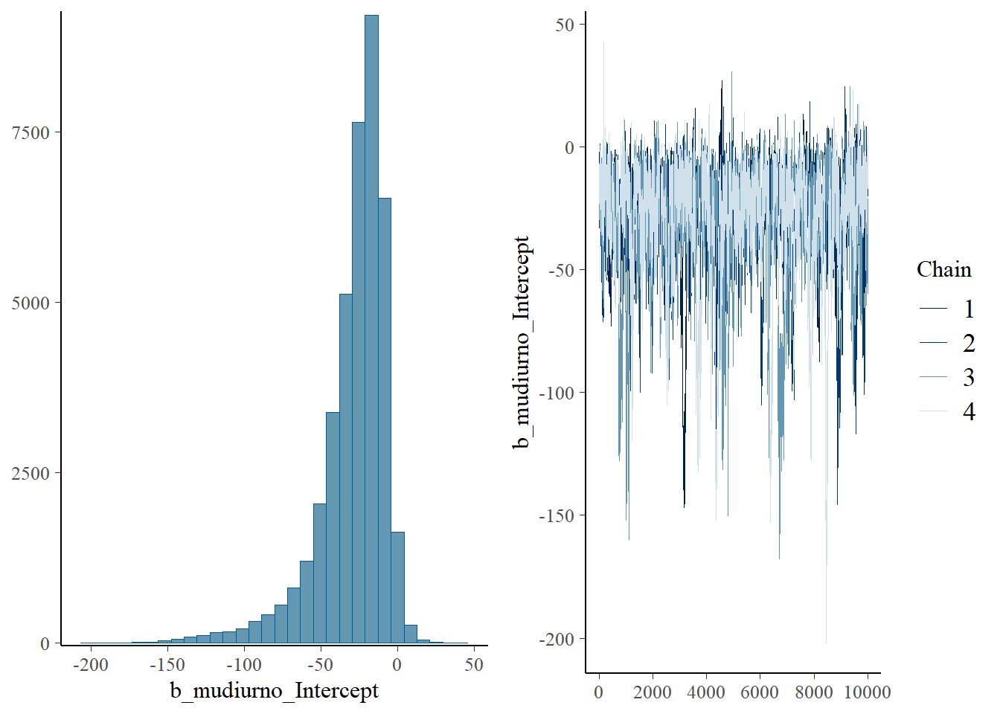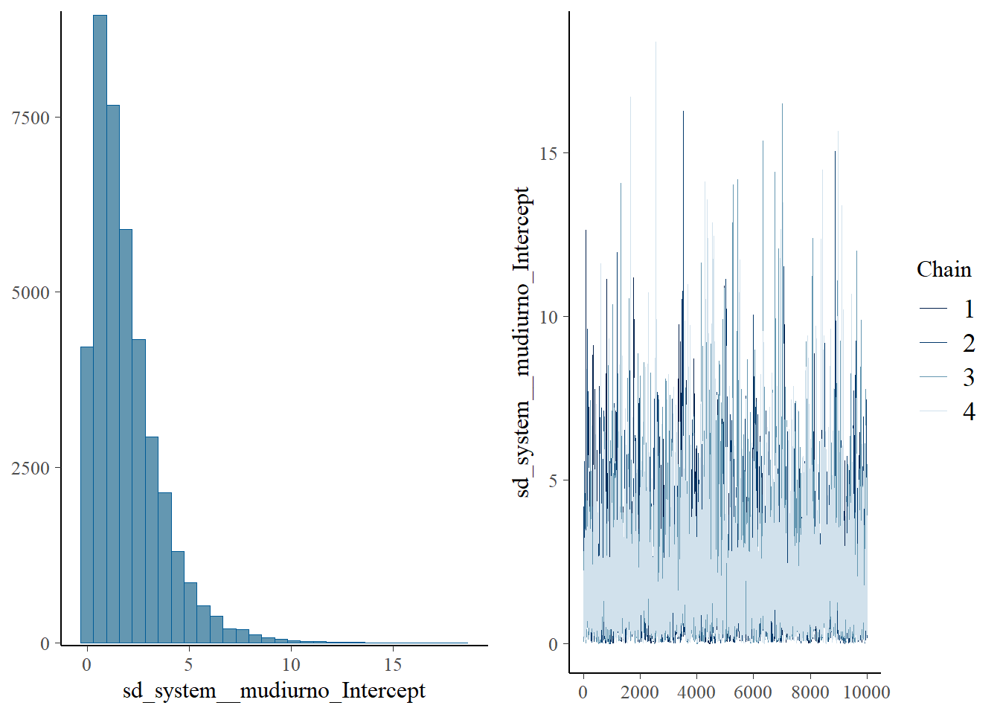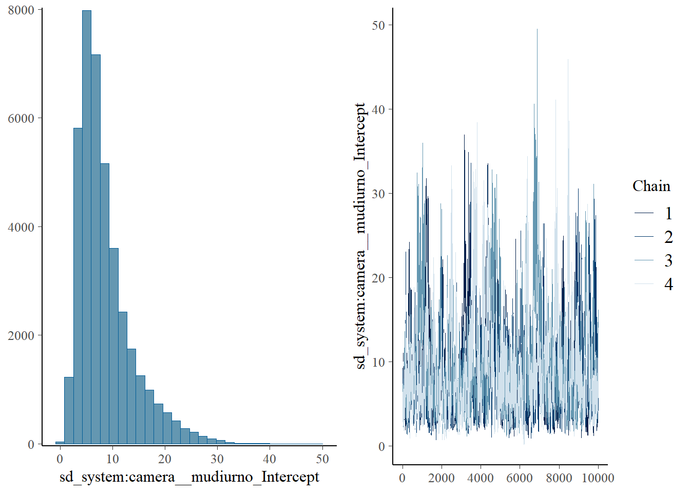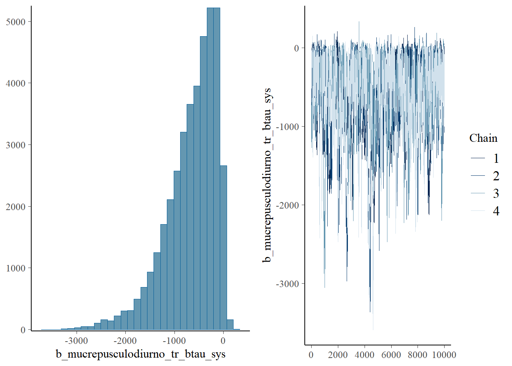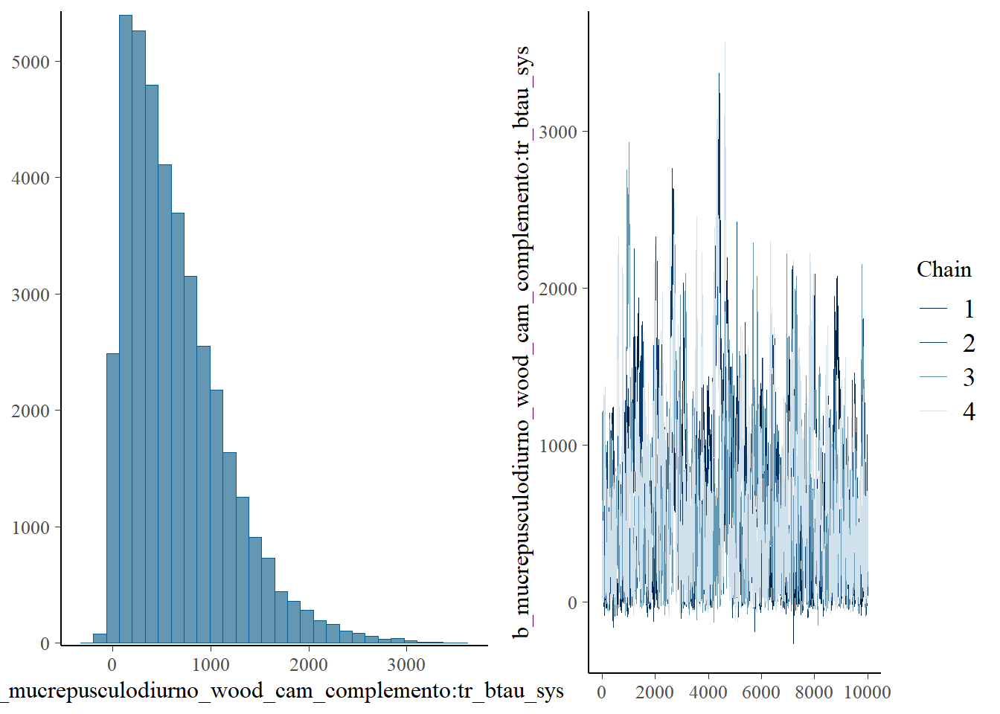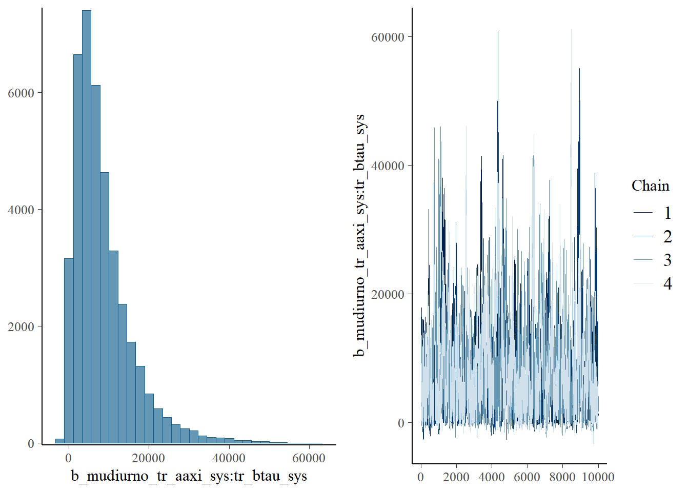